When JProfiler measures the execution times of method calls together with their call stacks, we call it "CPU profiling". This data is presented in a variety of ways. Depending on the problem you are trying to solve, one or the other presentation will be most helpful. CPU data is not recorded by default, you have to switch on CPU recording to capture interesting use cases.
Measuring method calls can be done with two different techniques called "sampling" and "instrumentation", each of which has advantages and drawbacks: With sampling, the JVM is stopped periodically and the current call stack is inspected. With instrumentation, the bytecode of selected classes is modified to trace method entry and exit.
When processing sampling data, subsequent samples are compared. Their common call stack shows which method was likely executing in the entire time between both samples. With a large number of samples, a statistically correct picture emerges. The advantage of sampling is that has a very low overhead. No bytecode has to be modified and the sampling period is much larger than the typical duration of a method call. The downside is that you miss short-running method invocations and you cannot determine method invocation counts. This does not matter if you are looking for performance bottlenecks, but can be inconvenient if you are trying to understand the detailed runtime characteristics of your code.
Instrumentation, on the other hand, can introduce a large overhead if many short-running methods are instrumented. This instrumentation distorts the relative importance of performance hot spots because of the inherent overhead of the time measurement but also because many methods that would otherwise be inlined by the hot spot compiler must now remain separate method calls. For method calls that take a longer amount of time, the overhead is insignificant. If you can find a good set of classes that mainly perform high-level operations, instrumentation will add a very low overhead and can be preferable to sampling. Also, the invocation count is often important information that makes it much easier to see what is going on.
Keeping track of all method calls and their call stacks would consume a considerable amount of memory and could only be kept up for a short time until all memory is exhausted. Also, it is not easy to intuitively grasp the number of method calls in a busy JVM. Usually, that number is so great that locating and following traces is impossible.
Another aspect is that many performance problems only become clear if the collected data is aggregated. In that way, you can tell how important method calls are with respect to the entire activity in a certain time period. With single traces, you have no notion of the relative importance of the data that you are looking at.
This is why JProfiler builds a cumulated tree of all observed call stacks, annotated with the observed timings and invocation counts. The chronological aspect is eliminated and only the total numbers are kept. Each node in the tree represents one call stack that was observed at least once. Nodes have children that represent all the outgoing calls that were seen at that call stack.
The call tree is the first view in the "CPU views" section, and it's a good starting point when you start CPU profiling, because the top-down view that follows method calls from the starting points to the most granular end points is most easily understood. JProfiler sorts children by their total time, so you can open the tree depth-first to analyze the part of the tree that has the greatest performance impact.
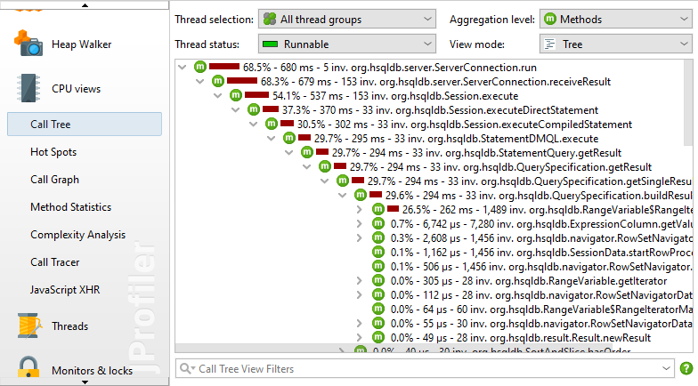
If methods from all classes are shown in the call tree, the tree is usually too deep to be manageable. If your application is called by a framework, the top of the call tree will consist of framework classes that you don't care about and your own classes will be deeply buried. Calls into libraries will show their internal structure, possibly with hundreds of levels of method calls that you are not familiar with and not in a position to influence.
The solution to this problem is to apply filters to the call tree, so that only some classes are recorded. As a positive side-effect, less data has to be collected and less classes have to be instrumented, so the overhead is reduced.
By default, profiling sessions are configured with a list of excluded packages from commonly used frameworks and libraries.
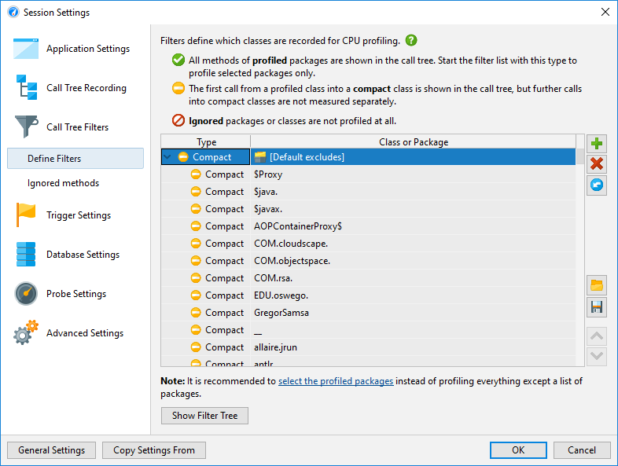
Of course this list is incomplete so it's much better that you delete it and define the packages of interest yourself. In fact, the combination of instrumentation and the default filters is so undesirable, that JProfiler suggests to change it in the session startup dialog.
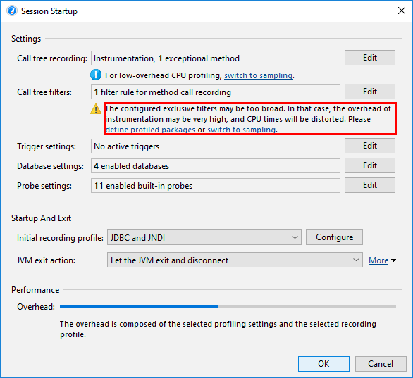
The filter expressions are compared against the fully qualified class name, so com.mycorp.
matches classes in all nested packages, like com.mycorp.myapp.Application.
There are three types of filters, called "profiled", "compact" and "ignored". All methods in "profiled" classes
are measured. This is what you need for your own code.
In a class that is contained by a "compact" filter, only the first call into that class is measured, but no
further internal calls are shown. "Compact" is what you want for libraries, including the JRE. For example,
when calling hashMap.put(a, b) you probably want to see HashMap.put() in the call tree,
but not more than that - its inner workings should be treated as opaque unless you are the developer of the
map implementation.
Finally, "ignored" methods are not profiled at all. They may be undesirable to instrument due to overhead considerations or they may simply be distracting in the call tree, such as internal Groovy methods that are inserted between dynamic calls.
Entering packages manually is error prone, so you can use the package browser. Before you start the session, the package browser can only show you packages in the configured class path which often does not cover all the classes that are actually loaded. At runtime, the package browser will show you all loaded classes.
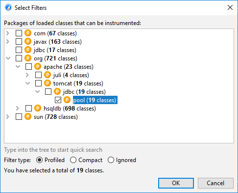
The configured list of filters is evaluated from top to bottom for each class. At each stage, the current filter type may change if there is a match. It's important what kind of filter starts off the list of filters. If you start with a "profiled" filter, the initial filter type of a class is "compact", meaning that only explicit matches are profiled.
If you start it with a "compact" filter, the initial filter type of a class is "profiled". In this case, all classes are profiled except for explicitly excluded classes.
To interpret the call tree correctly, it's important to understand the numbers that are displayed on the call tree nodes. There are two times that are interesting for any node, the total time and the self time. The self time is the total time of the node minus the total time in the nested nodes.
Usually, the self time is small, except for compact-filtered classes. Most often, a compact-filtered class is
a leaf node and the total time is equal to the self time because there are no child nodes. Sometimes,
a compact-filtered class will invoke a profiled class, for example via a callback or because it's the entry point
of the call tree, like the run method of the current thread. In that case, some unprofiled
methods have consumed time, but are not shown in the call tree. That time bubbles up to the first available
ancestor node in the call tree and contributes to the self time of the compact-filtered class.
The percentage bar in the call tree shows the total time, but the self time portion is shown with a different color. Methods are shown without their signatures unless two methods on the same level are overloaded. There are various ways to customize the display of the call tree nodes in the view settings dialog. For example, you may want to show self times or average times as text, always show method signatures or change the used time scale. Also, the percentage calculation can be based on the parent time instead of the time for the entire call tree.
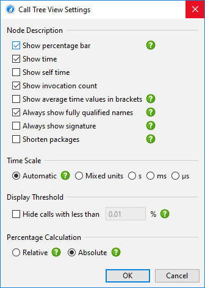
At the top of the call tree there are several view parameters that change the type and scope of the displayed profiling data. By default, all threads are cumulated. JProfiler maintains CPU data on a per-thread basis and you can show single threads or thread groups.
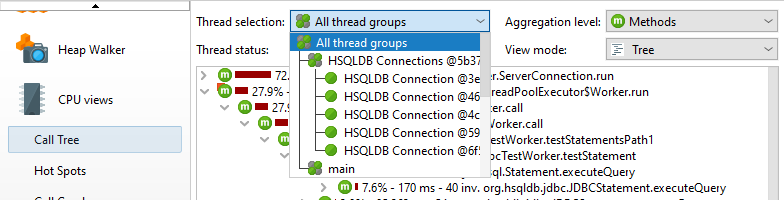
At all times, each thread has an associated thread status. If the thread is ready to process bytecode instructions or is currently executing them on a CPU core, the thread status is called "Runnable". That thread state is of interest when looking for performance bottlenecks, so it is selected by default.
Alternatively, a thread may by waiting on a monitor, for example by callingObject.wait() or
Thread.sleep() in which case the thread state is called "Waiting". A thread that is blocked while
trying to acquire a monitor, such as at the boundary of asynchronized code block is in the
"Blocking" state.
Finally, JProfiler adds a synthetic "Net I/O" state that keeps track of the times when a thread is waiting for network data. This is important for analyzing servers and database drivers, because that time can be relevant for performance analysis, such as for investigating slow SQL queries.
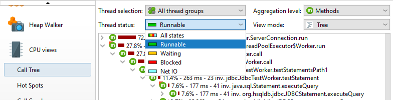
If you are interested in wall-clock times, you have to select the thread status "All states" and also
select a single thread. Only then can you compare times with durations that you have calculated with
calls to System.currentTimeMillis() in your code.
If you want to shift selected methods to a different thread status, you can do so with a method trigger
and an "Override thread status" trigger action, or by using the ThreadStatus class
in the embedded or
injected probe APIs.
There are two ways to search for text in the call tree. First, there is the quicksearch option
that is activated by invoking View->Find from the menu or by directly starting
to type into the call tree. Matches will be highlighted and search options are available after pressing
PageDown. With the ArrowUp and ArrowDown keys you can cycle through the
different matches.
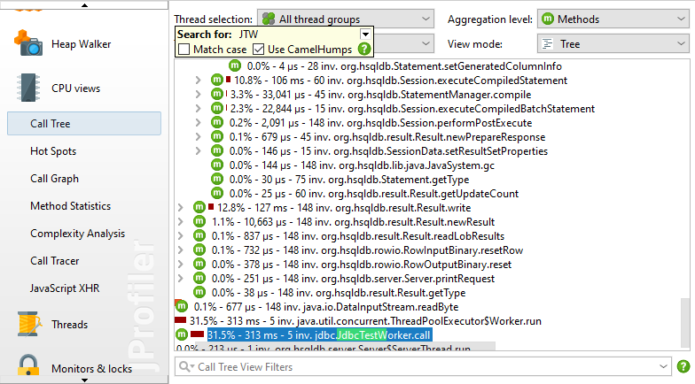
Another way to search for methods, classes or packages is to use the view filter at the bottom of the call tree. Here you can enter a comma-separated list of filter expressions. Filter expressions that start with a "-" are like compact filters, otherwise they are like profiled filters. Just like for the filter settings, the initial filter type determines if classes are included or excluded by default.
Clicking on the icon to the left of the view settings text field shows the view filter options. By default, the matching mode is "Contains", but "Starts with" may be more appropriate when searching for particular packages.
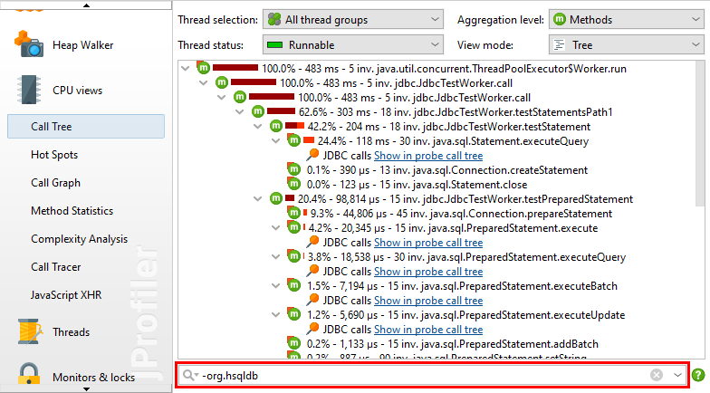
While all measurements are performed for methods, JProfiler allows you to take a broader perspective by aggregating the call tree on the class or package level. The aggregation level selector also contains a "Java EE components" mode. If your application uses Java EE, then the call tree will show additional nodes that split the call tree when the call stack crosses the boundary of a Java EE component. The "Java EE components" aggregation level removes all method nodes and only leaves the component nodes in the tree.
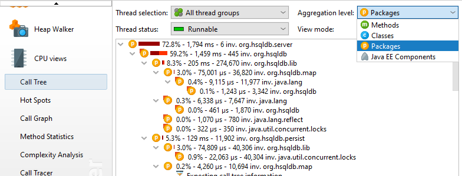
Another way to view the call tree is as a tree map. Each rectangle in the tree map represents a particular node in the tree. The area of the rectangle is proportional to the length of the size bar in the tree view. In contrast to the tree, the tree map gives you a flattened perspective of all leafs in the tree. If you are mostly interested in the dominant leafs of the tree, you can use the tree map in order to find them quickly without having to dig into the branches of the tree. Also, the tree map gives you an overall impression of the relative importance of leaf nodes.
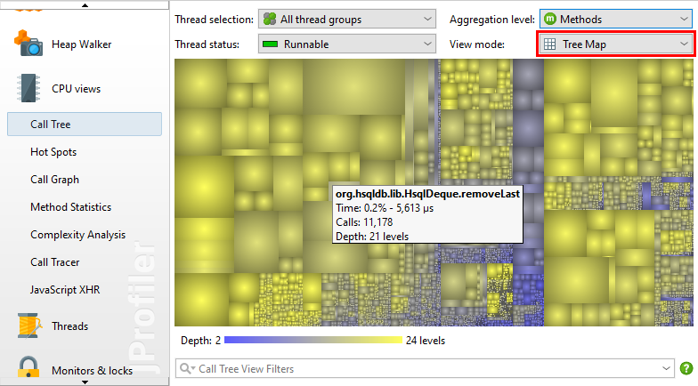
By design, tree maps only display values of leaf nodes. Branch nodes are only expressed in the way the leaf nodes are nested. For non-leaf nodes with significant self values, JProfiler constructs synthetic child nodes. In the diagram below, you can see that node A has a self value of 20% so that its child nodes have a sum of 80%. To show the 20% self value of A in the tree map, a synthetic child node A' with a total value of 20% is created. It is a leaf node and a sibling node of B1 and B2. A' will be shown as a colored rectangle in the tree map while A is only used for determining the geometric arrangement of its child nodes B1, B2 and A'.
The actual information for tree map nodes is displayed in tool tips that are immediately shown when you hover over the tree map. The numbers correspond to the information that is shown in the tree view mode. The tree map is shown up to a maximum nesting depth of 25 levels and its scale is always relative to the currently displayed nodes.
Both the higher aggregation levels as well as the tree map are a way to step back from the detail of the method level and take a bird's eye view. However, you will often want to go back to the method level when you find a point of special interest. If a node is selected and you change the method aggregation level, JProfiler tries to preserve the call stack as best as possible. With the tree map, the Show in tree action in the context menu offers a way back into the call tree.
If your application is running too slowly, you want to find the methods that take most of the time. With the call tree, it is sometimes possible to find these methods directly, but often that does not work because the call tree can be broad with a huge number of leaf nodes.
In that case, you need the inverse of the call tree: A list of all methods sorted by their total self time,
cumulated from all different call stacks and with back traces that show how the methods were called.
In a hot spot tree, the leafs are the entry points, like the main method of the application
or the run method of a thread. From the deepest nodes in the hot spot tree, the call propagates
upward to the top-level node.
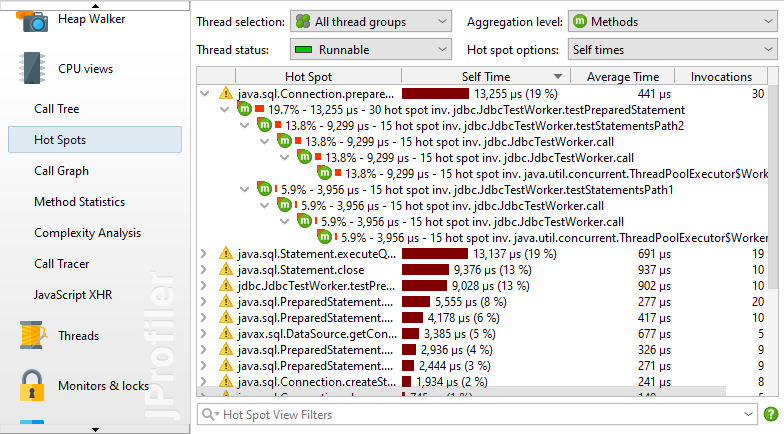
The invocation counts and execution times in the backtraces do not refer to the method nodes, but rather to the
number of times that the top-level hot spot node was called along this path. This is important to understand:
At a cursory glance, you would expect the information on a node to quantify calls to that node. However,
in a hot spot tree, that information shows the contribution of the node to the top-level node.
So you have to read the numbers like this: Along this inverted call stack, the top-level hot spot was called
n times with a total duration of t seconds.
By default, the hot spots are calculated from self time. You can also calculate them from total time. This is not very useful for analyzing performance bottlenecks, but can be interesting if you would like to see a list of all methods. The hot spot view only shows a maximum number of methods to reduce overhead, so a method you are looking for may not by displayed at all. In that case, use the view filters at the bottom to filter the package or the class. Contrary to the call tree, the hot spot view filters only filter the top-level nodes. The cutoff in the hot spot view is not applied globally, but with respect to the displayed classes, so new nodes may appear after applying a filter.
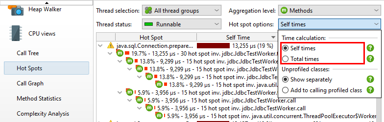
The notion of a hot spot is not absolute but depends on the call tree filters. If you have no call tree filters at all, the biggest hot spots will most likely always be methods in the core classes of the JRE, like string manipulation, I/O routines or collection operations. Such hot spots would not be very useful, because you often don't directly control the invocations of these methods and also have no way of speeding them up.
In order to be useful to you, a hot spot must either be a method in your own classes or a method in a library class that you call directly. In terms of the call tree filters, your own classes are in "profiled" filters and the library classes are in "compact" filters.
When solving performance problems, you may want to eliminate the library layer and only look at your own classes. You can quickly switch to that perspective in the call tree by selecting the Add to calling profiled class radio button in the hot spot options popup.
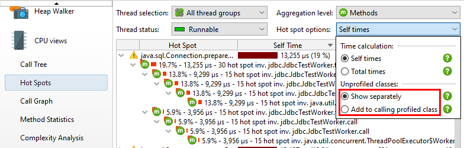
Both in the call tree as well in the hot spots view each node can occur multiple times, especially when calls are made recursively. In some situations you are interested in a method-centric statistics where each method only occurs once and all incoming and outgoing calls are visible. Such a view is best displayed as a graph and in JProfiler, it is called the call graph.
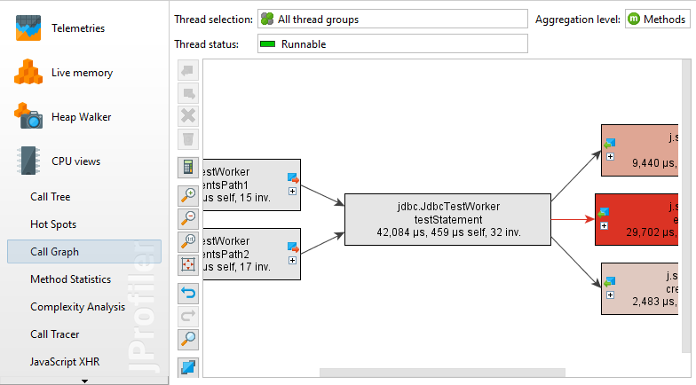
One drawback of graphs is that their visual density is lower than that of trees. This is why JProfiler abbreviates package names by default and hides outgoing calls with less than 1% of the total time by default. As long as the node has an outgoing expansion icon, you can click on it again to show all calls. In the view settings, you can configure this threshold and turn off package abbreviation.
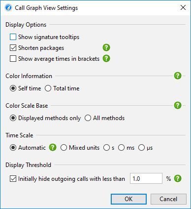
When expanding the call graph, it can get messy very quickly, especially if you backtrack multiple times. Use the undo functionality to restore previous states of the graph. Just like the call tree, the call graph offers quick search. By typing into the graph, you can start the search.
The graph and the tree views each have their advantages and disadvantages, so you may sometimes wish to switch from one view type to another. In interactive sessions the call tree and hot spots views show live data and are updated periodically. The call graph however, is calculated on request and does not change when you expand nodes. The Show in Call Graph action in the call tree calculates a new call graph and shows the selected method.
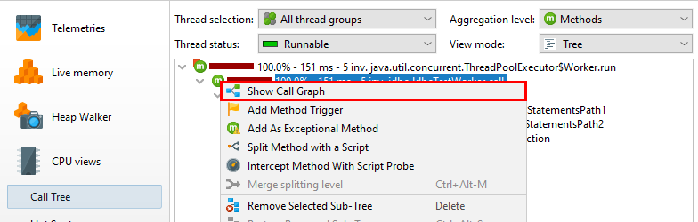
Switching from the graph to the call tree is not possible because the data is usually not comparable anymore at a later time. However, the call graph offers call tree analyses with its View->Analyze actions that can show you trees of cumulated outgoing calls and backtraces for each selected node.
The ensemble of call tree, hot spots view and call graph has many advanced features that are explained in detail in a different chapter. Also, there are other advanced CPU views that are presented separately.